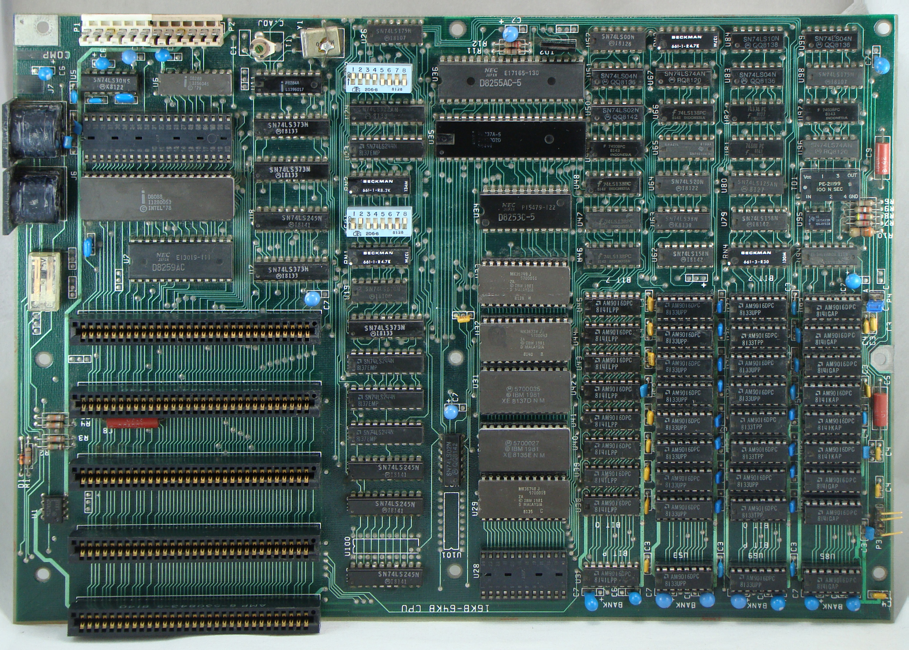
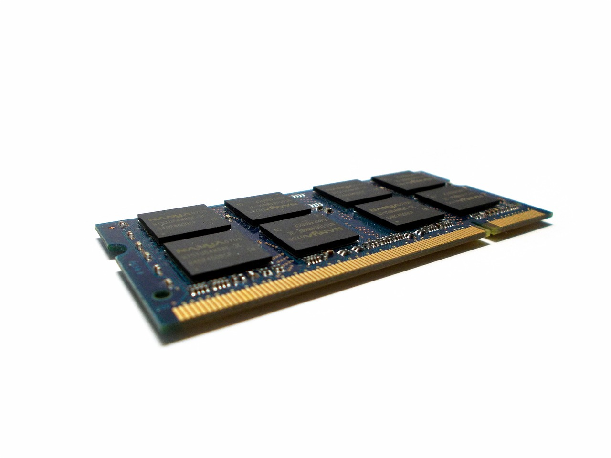
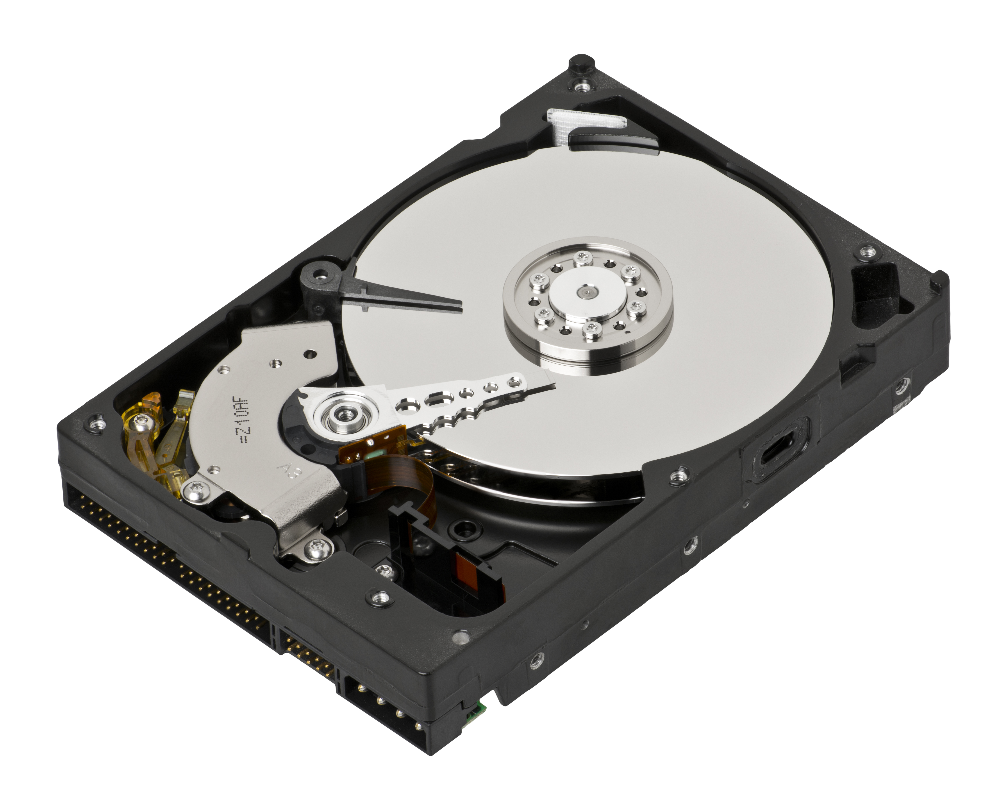

CC0 1.0 Universal (CC0 1.0) Public Domain Dedication

Copyright-Only Dedication* (based on United States law) or Public Domain Certification
Motherboard: A component that allows other hardware devices to interact with each other (the body of the computer)
Attribution-ShareAlike 3.0 Unported (CC BY-SA 3.0)
Ram: Where the data is stored that your computer needs to run applications for short term (memory of the computer)
Copyright-Only Dedication* (based on United States law)
CPU: hardware device that guides the computer through the various steps of solving a problem (brain of the computer)

Attribution-NonCommercial-NoDerivatives 4.0 International (CC BY-NC-ND 4.0),CC0 1.0 Universal (CC0 1.0) Public Domain Dedication
Hard drive: stores all the digital content of the computer (long term memory)
 Attribution-ShareAlike 3.0 Unported (CC BY-SA 3.0)Peripheral devices consists of output and input devices that contributes to the sharing of information
CC0 1.0 Universal (CC0 1.0) Public Domain Dedication
Copyright-Only Dedication* (based on United States law) or Public Domain Certification
Attribution-ShareAlike 4.0 International (CC BY-SA 4.0)
CC0 1.0 Universal (CC0 1.0) Public Domain Dedication
There are more devices than listed, but they all contribute to the development of technology and making life easier for businesses and society by the relationship the user has with the computer.
The computer has amazing functions when giving a task. But a computer workstation is set to get the best possible function for a computer. Depend on the types of computer, they will consist of Peripheral devices,
When making a website there are multiple things you need to watch out for depending on the type of website you are making and what features you are adding for example if you are making a website that deals with money you must be careful because if you're not safe the transactions and money can be stolen by internet thief's and they can take all of your money or if you make a website with confidential information you have to make sure that all the information is safe because if you don’t they can get vital information that can be used in bad ways.
I feel that the future of computer technologies and technology in general is evolving to a state where less work is needed for individual to do manually. For example, the creation of ChatGPT, used in the educational state, caused risks of ethical issues in schools like cheating and incentivizing minimal effort from students. Also, I feel that how the world is evolving, the reliability of technologies will increase.
A phone is an output and input device, and it gives access to the internet in your pocket, you can search up anything and play games. The camera is an input device, and the photo is the output and photos help us save and capture moments in time to keep the memories forever.
Now it is time to play blooket!!!